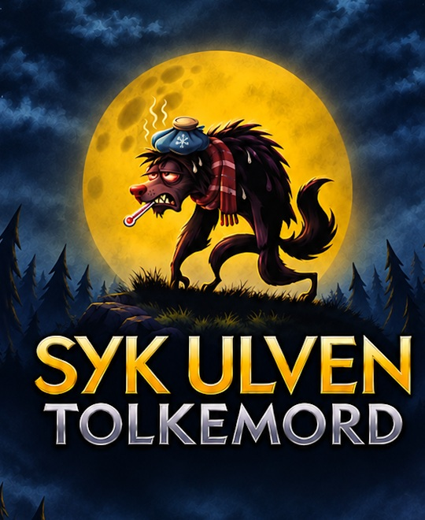

Velg kort til spillet
Trykk på kortene du vil bruke. Grønn markering betyr at kortet er valgt. «Alle» velger eller fjerner alle kortene samtidig.
0 av 23 valgt
Dine opplastede nattklipp lagres lokalt i nettleseren på denne enheten.

Spillederkontroll
Trykk på kortene du vil bruke. Grønn markering betyr at kortet er valgt. «Alle» velger eller fjerner alle kortene samtidig.